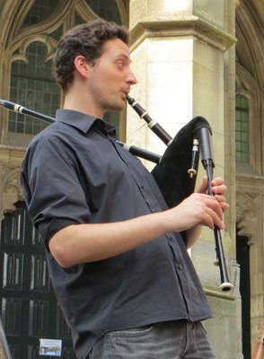

vrijdag
13:30-16:30
Snobquiz
Gaan van radio 538 jou oren ook bloeden? Zoek jij je heil bij studio Brussel of zelfs helemaal niet op de radio? Kom dan naar de alternative popuiz van Mourad Majiti. Een goede test van je muziekkennis én bier in een de gloednieuwe bierbrouwerij op de Tramkade. Klinkt als een goed begin van je festivalbezoek!
vrijdag
14:00-17:00
Faqlab
Neem een kijkje in het speelse lab van Faq Festival. Het Koudijs Lokaal is omgetoverd tot een waar laboratorium vol installaties, joysticks, modulaire synthesizers, soldeerbouten en loopstations. In verschillende workshops en demonstraties leer je meer over deze instrumenten en kun je zelf aan de slag met het in elkaar solderen van je eigen elektro-kit!

vrijdag
14:00-18:00
Hooping Sassie
Onderdeel van het dagprogramma zijn de supervette workshops hoepelen door Saskia Godwaldt. Er zullen voldoende hoepels aanwezig zijn voor tijdens de workshop. De eerste stap is dat we gaan proberen om de hoepel draaiend hoog te houden. Daarna leer je bewegen op muziek. Mocht je dit onder de knie hebben dan is er een mogelijkheid om simpele trucjes te leren. Je beweegt dus het is ook gezond, geeft ontspanning en is goed voor je spieren natuurlijk. Vind je het echt helemaal te gek? Je kunt dan ter plekke ook een hoepel aanschaffen.
vrijdag
14:00-18:00
Jamsessie
Vanaf 14:00 is er bij Stichting Jong Actief een jamsessie waar jong en oud zich bij aan mogen sluiten om hun kunsten te vertonen en in groepsverband muziek te creëren. De jamsessie wordt begeleid door Marlon van den Dungen en Daan Lemmers. Een backline is deze middag aanwezig. Op het drumstel na breng je zelf je instrument mee zoals dat bij elke andere jamsessie het geval is. Voor rappers die zin hebben om wat rijms te klappen, jullie zijn welkom om bij de jamsessie aan te sluiten. Heb je bepaalde instrumentals waar je op wil spitten, neem deze dan mee als mp3 op een usb stick.
vrijdag
14:00-15:00
Vocal Freestyle
In deze workshop bij de Jazzwerkplaats neemt Babz Verhoeven (zangcoach) je mee naar de onbegrensde mogelijkheden van je stem. Hoe zing je zacht en hoe zing je luid? Hoe kun je scheuren als een heavy metal zanger en hoe zing je meerstemmig? Een onderhoudende, vrolijke workshop voor lefbekken.
vrijdag
14:00-18:00
Workshop Rap
Rapper De Bruwelijke (Remi van Hoof), voorheen bekend als d’Blo, zal vanaf 14:00 uur een aantal rap workshops verzorgen, waar je de basis leert om een goede rap te schrijven. Aan het eind van de workshop mag je op het podium bij de jamsessie, die op dat moment ook plaatsvindt, je rap op de mic ‘spugen’. Voor hen die het rappen al onder de knie hebben en zin hebben om wat rijms te klappen, jullie zijn welkom om bij de jamsessie aan te sluiten. Heb je bepaalde instrumentals waar je op wil spitten, neem deze dan mee als mp3 op een usb stick.
vrijdag
15:30-16:30
Afrikaanse djembé
Ritme in je lijf, altijd ergens op aan het tikken en trommelen; herken je dat? Doe dan mee aan een Djembé-workshop van Martin Gort bij de Jazzwerkplaats en pik nog wat nieuws op! Martin Gort behoort tot de top van de Nederlandse percussiewereld. Hij leert je ritmes uit West Afrika, uit Cuba, weet alles van straatpercussie en haalt het beste uit jouw eigen gevoel voor cadans en dat van de groep.
vrijdag
16:15-16:45
Arvid en Marie
Afgezien van ander onderzoek zijn de geluidsvoorstellingen van Arvid & Marie de meest ontketende van hun creatieve werk. Het barmy-duo houdt ervan om zeer serieuze thema's op nogal absurde manieren te verkennen. Door middel van muziek en gesproken woord wordt geluid een materiaal voor surrealistische sferen. Niets is ooit verzekerd in hun universum van improvisatie, gevonden objecten en zelfgemaakte instrumenten.

vrijdag
18:00-21:00